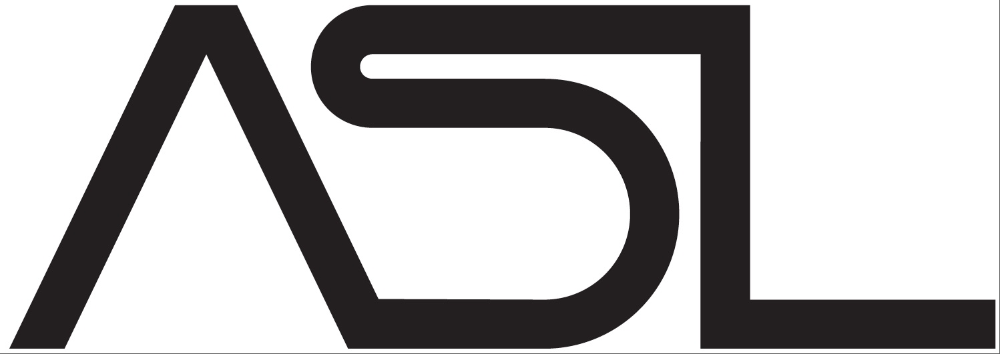
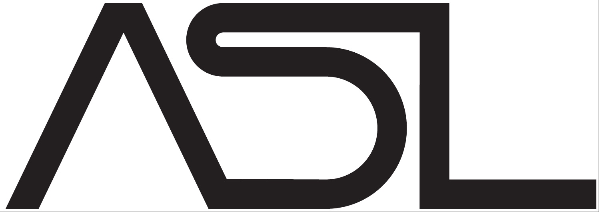

Second Workshop on Proof Mining (WPM26)
University of Bath, 7–9 September 2026
This is the second instance of a series of workshops dedicated to providing opportunities for people from the diverse areas connected to proof mining to meet, present work in progress, and exchange ideas and knowledge. The meeting will be interdiscplinary in nature, with a particular focus on
- logical aspects of proof mining, including proof interpretations and logical systems,
- applications to different areas of mainstream mathematics, including fixed point theory, monotone operator theory, ergodic theory, number theory and probability theory,
- the use of proof assistants to formalise and potentially automate aspects of proof mining.
Click here for the previous edition.

The event is supported by the Department of Computer Science at the University of Bath, the Association for Symbolic Logic and the British Logic Colloquium.
Participation
If you are interested in participating in the workshop, please contact Nicholas Pischke or Thomas Powell for registration. The deadline for registration is the 1st of August 2026. The meeting will take place in person. Please note that talks are by invitation only.
We are an ASL sponsored workshop which means that graduate students who are members of the ASL are eligible to apply for modest student travel awards to attend the meeting. Please read this webpage and/or contact Nicholas Pischke or Thomas Powell for more information. Note that applications must be received three months prior to the start of the meeting.
Programme
TBA
Venue
The main campus of the University of Bath is located on a hilltop just outside the city centre. It is within walking distance from Bath Spa train station in principle, but you should allow 30–40 minutes and be wary that the route involves a steep uphill climb. A more comfortable alternative is to take one of the regular bus connections from the city centre to the campus. Further information on how to get to the university can be found here, with details of bus routes here.
Organisers
 
